- Create a resource group
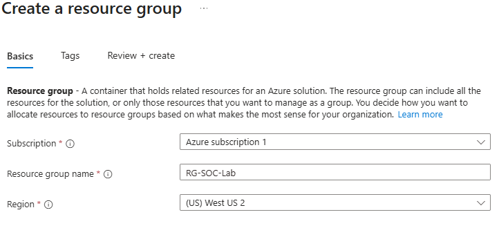
- Create a virtual network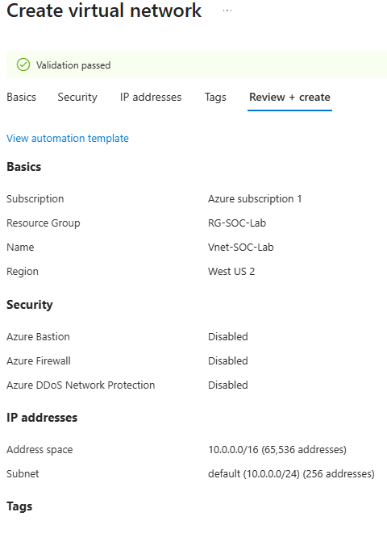
- Create a virtual machine (Honeypot) -Password- Cyberlab123!
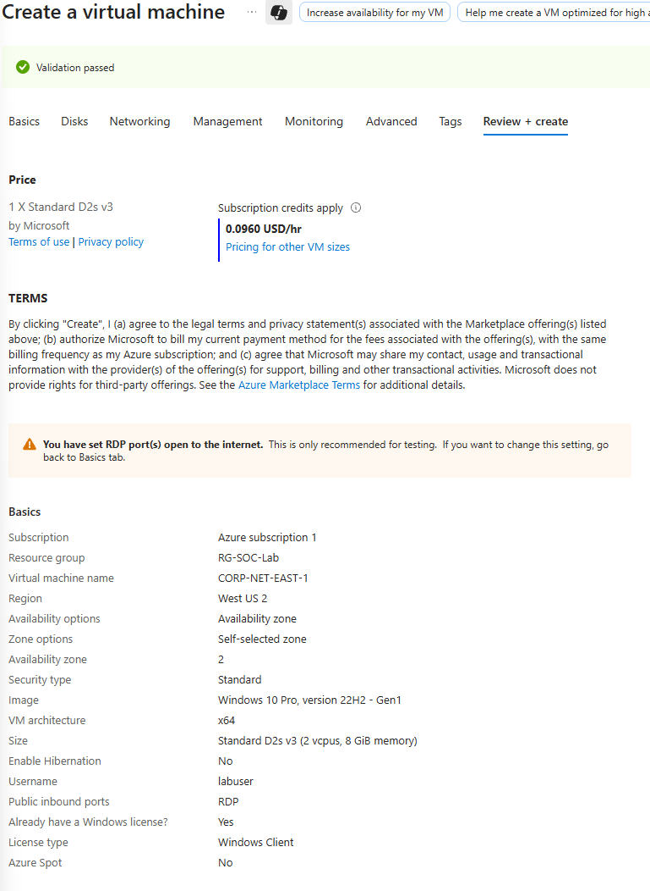 - This is the resource groups after done of created look.

- Go to network security group to open the firewall for the attack vector access . Delete the default RDP.
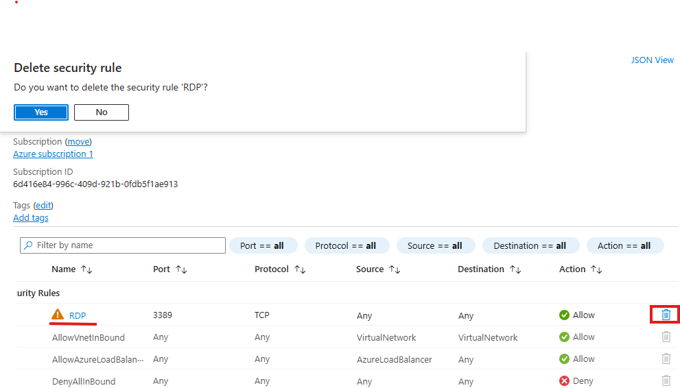 - Add new inbound security rule .
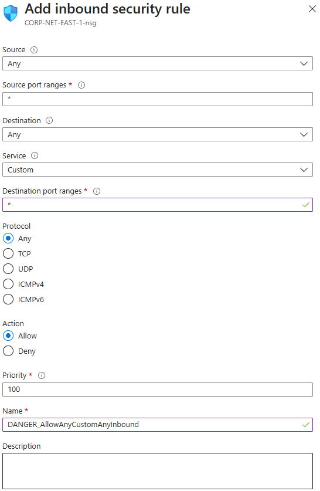 - Go the Azure virtual machines copy the Public IP address. Use your own computer Remote Desktop Connection paste the Public IP content. After that , enter the VM username and password to access the Azure VM.
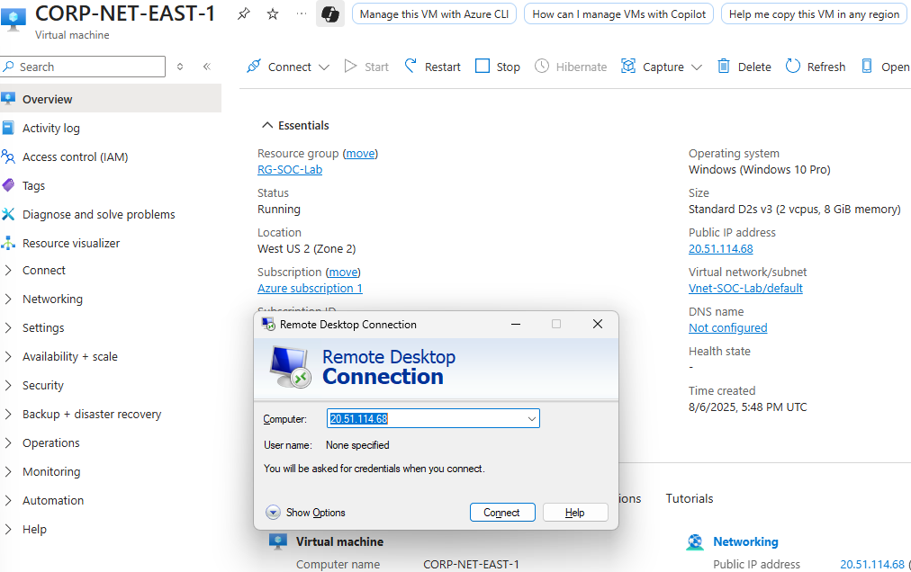 - Access successfully.
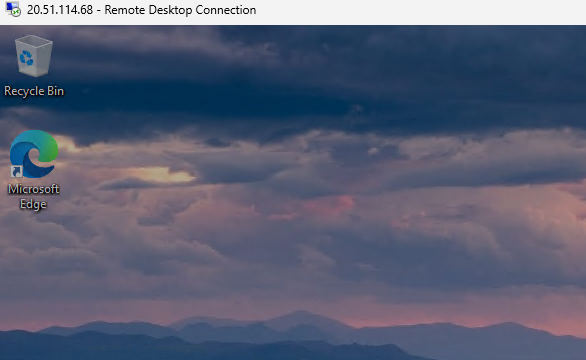
- Run -” wf.msc “. Go to Windows Defender Firewall Properties. Turn off domain, private and public profile firewall state.
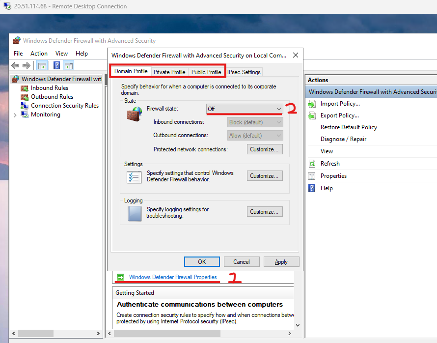
- Go to your own cmd try to ping the VM Public IP. Check can access for the VM or not.

- Go to Azure create log analytics workspace.
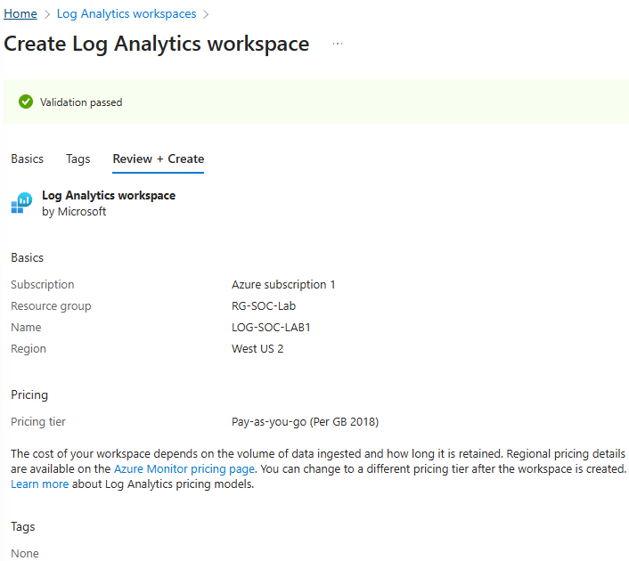
- Go Azure Microsoft Sentinel add the LOG-SOC-LAB1 for link log analytics workspace to the Azure Microsoft Sentinel (SIEM).
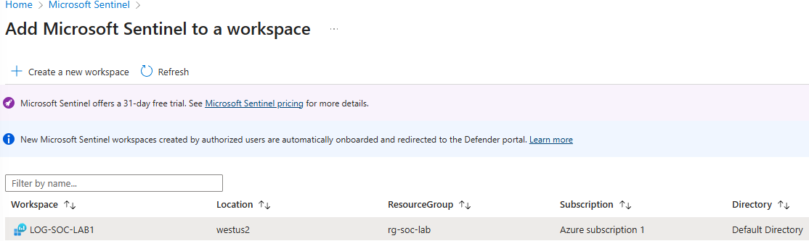
- Microsoft Sentinel | Content hub - search “ Windows Security Events” and intstall it.
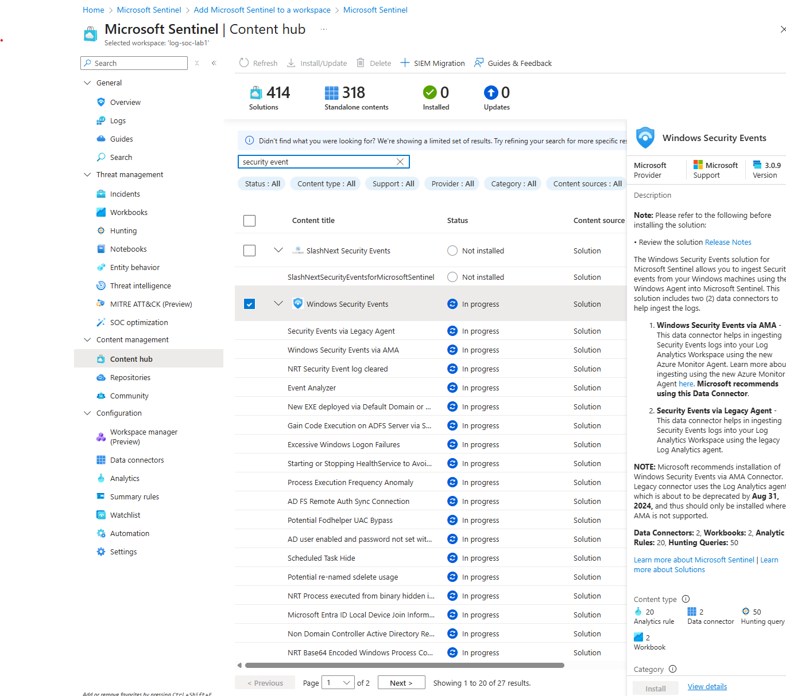
- After done install go to manage . Select - Windows Security Events via AMA - Open connector page
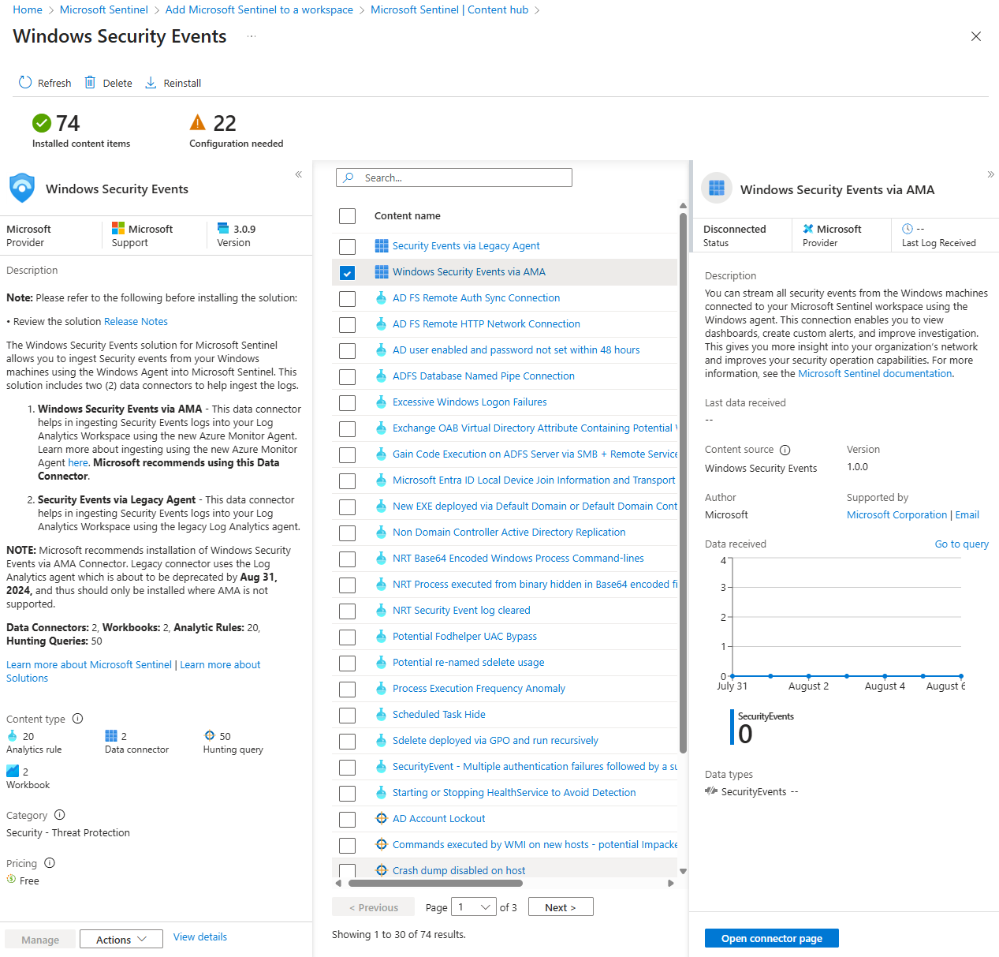
- Create data collection rule
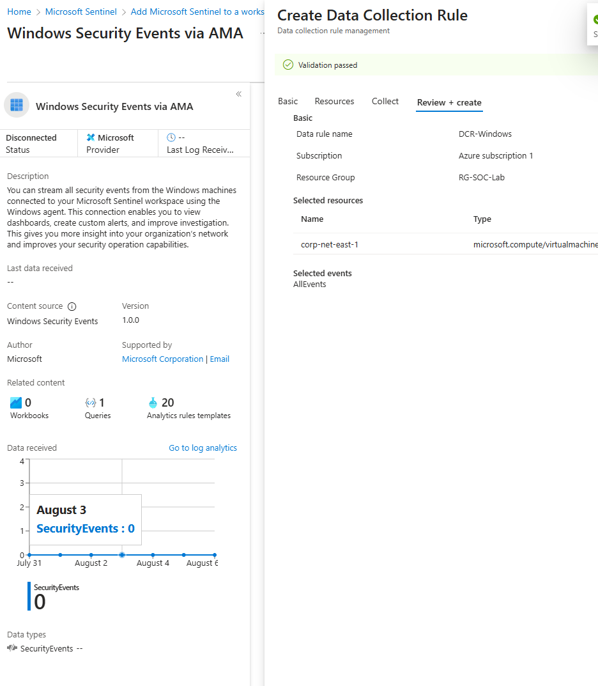
- Go to Microsoft Sentinel - create a watchlist wizard and upload the geoip-summarised excel file for using the attacker IPaddress detect latitude ,longitude,cityname and countryname.

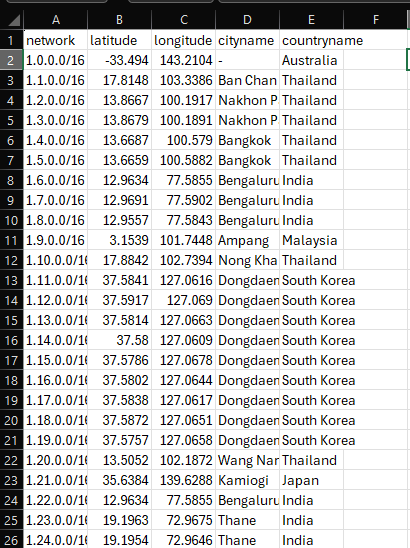
- After finishing upload, you are able to see 1 watchlists and 55k watchlist items
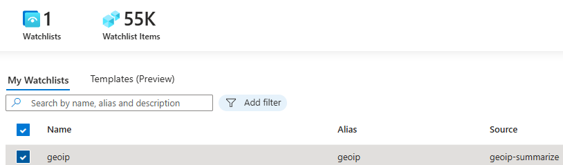
- Go to Log Analytics workspaces | LOG-SOC-LAB1 | Logs - select KQL mode . Then write a KQL code for detect 4625 login failed event log statement .
let GeoIPDB_FULL = _GetWatchlist("geoip"); let WindowsEvents = SecurityEvent
| where EventID == 4625
| order by TimeGenerated desc
| evaluate ipv4_lookup(GeoIPDB_FULL, IpAddress, network); WindowsEvents
| project TimeGenerated, Computer, AttackerIp = IpAddress, cityname, countryname, latitude, longitude, Activity
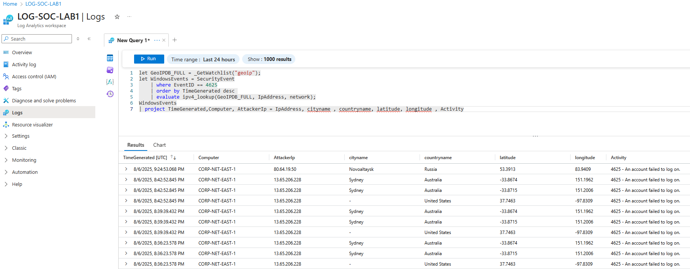
- Go to Microsoft Sentinel | Workbooks > Add Workbook > Edit > Add > Add query > select Advanced Editor > write the query to create a map
- This is the query code
{
"type": 3,
"content": {
"version": "KqlItem/1.0",
"query": "let GeoIPDB_FULL = _GetWatchlist(\"geoip\");\nlet WindowsEvents = SecurityEvent;\nWindowsEvents | where EventID == 4625\n| order by TimeGenerated desc\n| evaluate ipv4_lookup(GeoIPDB_FULL, IpAddress, network)\n| summarize FailureCount = count() by IpAddress, latitude, longitude, cityname, countryname\n| project FailureCount, AttackerIp = IpAddress, latitude, longitude, city = cityname, country = countryname,\nfriendly_location = strcat(cityname, \" (\", countryname, \")\");",
"size": 3,
"timeContext": {
"durationMs": 2592000000
},
"queryType": 0,
"resourceType": "microsoft.operationalinsights/workspaces",
"visualization": "map",
"mapSettings": {
"locInfo": "LatLong",
"locInfoColumn": "countryname",
"latitude": "latitude",
"longitude": "longitude",
"sizeSettings": "FailureCount",
"sizeAggregation": "Sum",
"opacity": 0.8,
"labelSettings": "friendly_location",
"legendMetric": "FailureCount",
"legendAggregation": "Sum",
"itemColorSettings": {
"nodeColorField": "FailureCount",
"colorAggregation": "Sum",
"type": "heatmap",
"heatmapPalette": "greenRed"
}
}
},
"name": "query - 0"
}
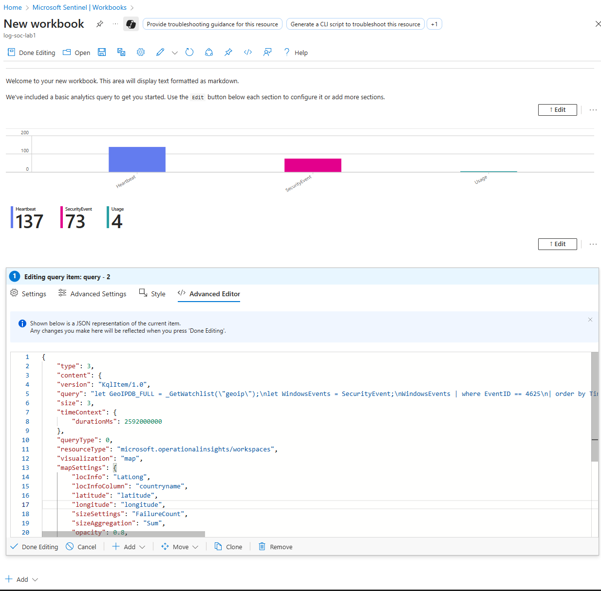
- After Done editing you able to see a map locator Attacker from where. Then configure the title, resource group and save as.
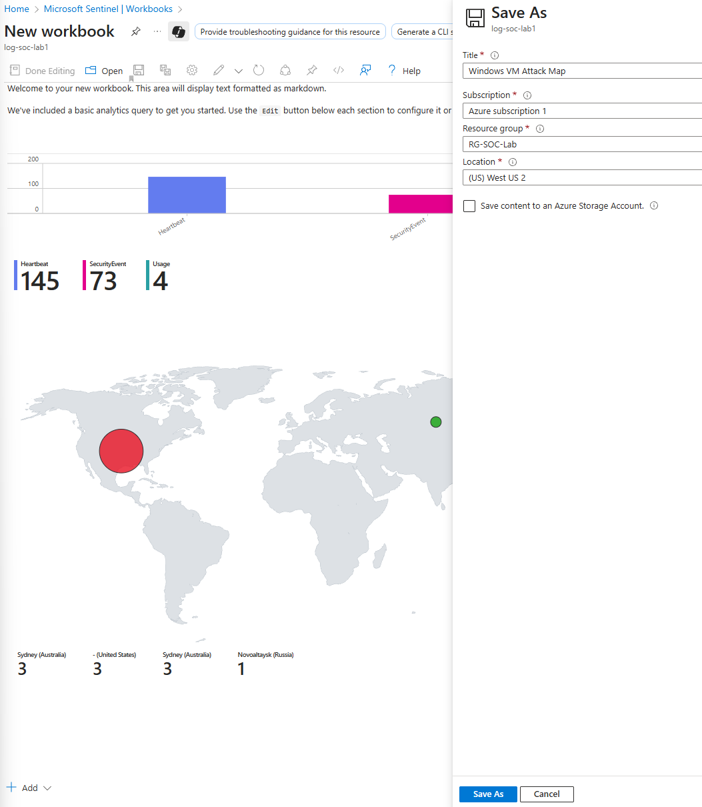
- This is a report after one day, with a total 6.58k attack to the VM.